Developer Portal & Deployment
First designer embedded in DevOps — establishing UX processes from scratch for 1,000+ engineers, migrating to private cloud, and making service creation 200× faster.
The Problem
Agoda's internal developer platform was fragmented, slow, and unscored. Creating a service took 1–2 working days. Deploying to private cloud required tribal knowledge. As the first designer embedded in the DevOps team, I established UX processes, metrics, and research cadence from scratch — self-teaching Kubernetes, Docker, and CI/CD to earn technical credibility along the way.
The broken service creation flow
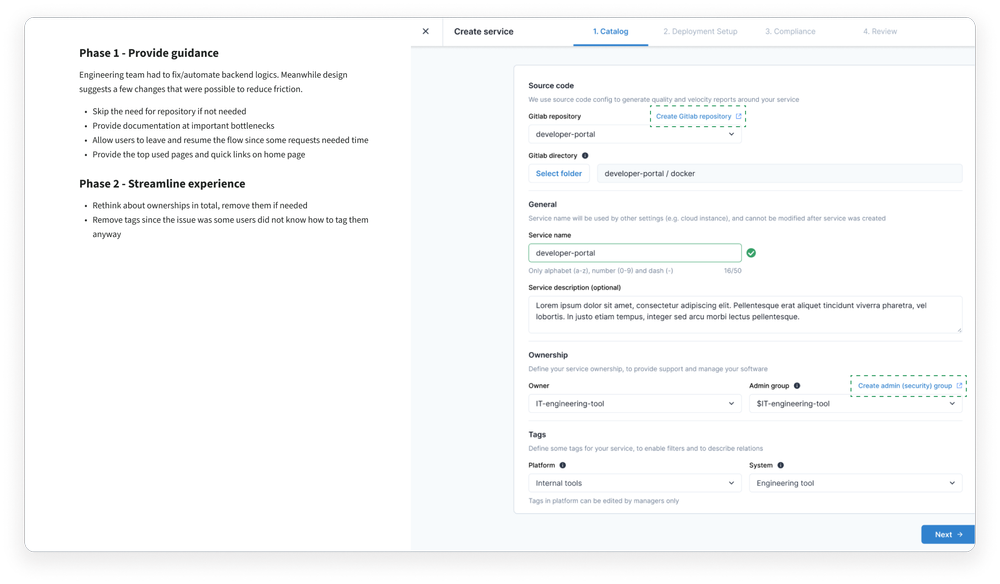
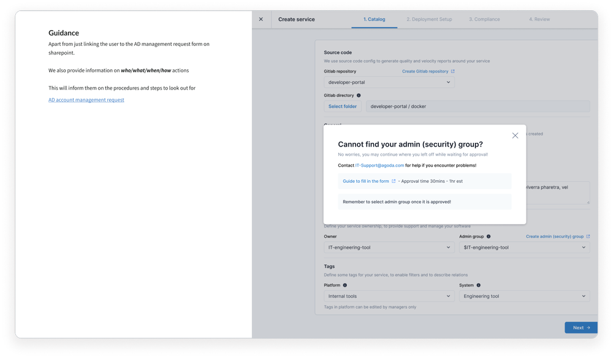
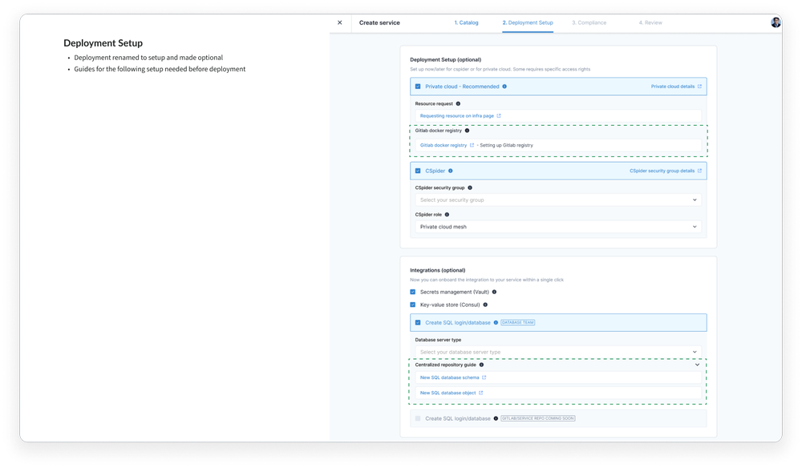
Engineers encountered blockers with no guidance — 1–2 working days to complete a single service.
Goals
01
Improve developer experience with measurable UX metrics
02
Migrate from servers to private cloud via UI
03
Build design rhythm in a team that had never had one
Process
Research synthesis
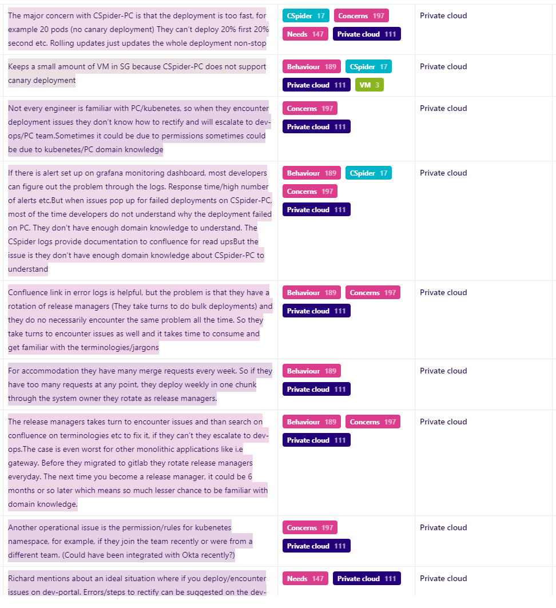
15+ developer interviews synthesized into themes
Ideation concepts
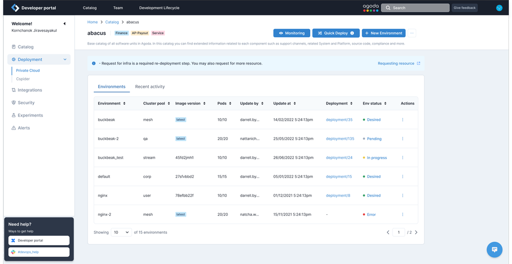
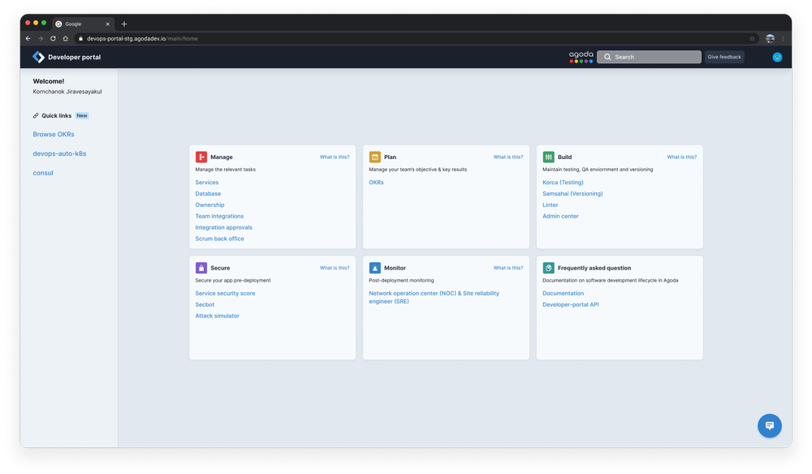
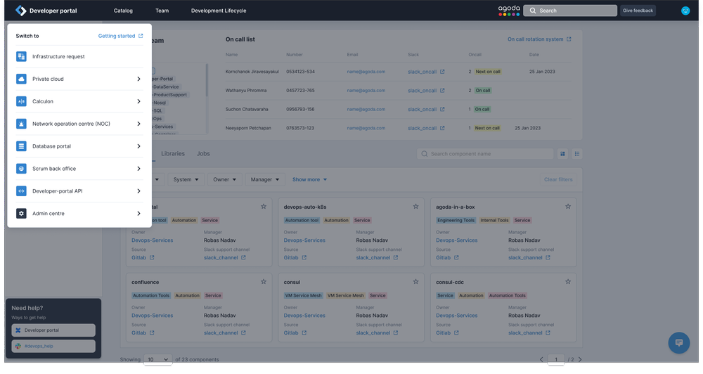
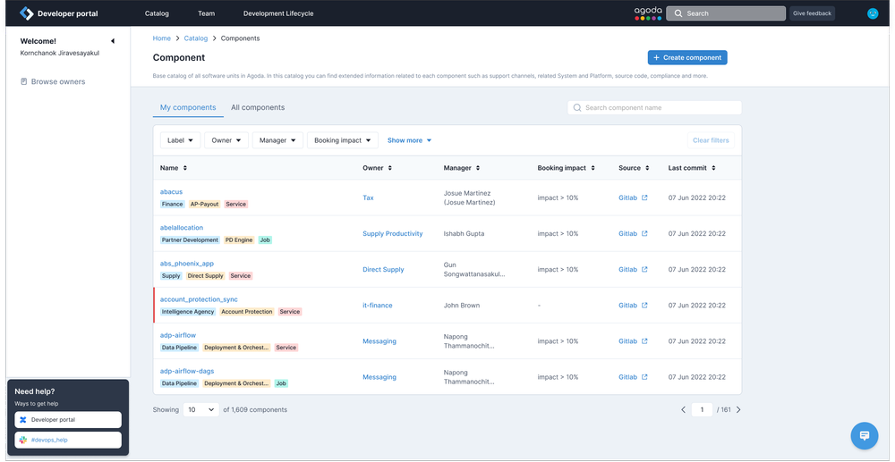
Domain immersion
Interviewed 15+ developers. Learned Kubernetes, Docker, and CI/CD to earn technical credibility. Supported by Agoda research team
Heuristic evaluation
Scored the platform against Nielsen's heuristics. Documented 47 usability issues.
Baseline & measure
Established SUS baseline (61.9). Re-ran every 2 quarters to track improvement.
Ideation & phased delivery
Phase 1: quick wins to unblock developers. Phase 2: full automation with approval workflows.
Solutions
Private Cloud Deployment
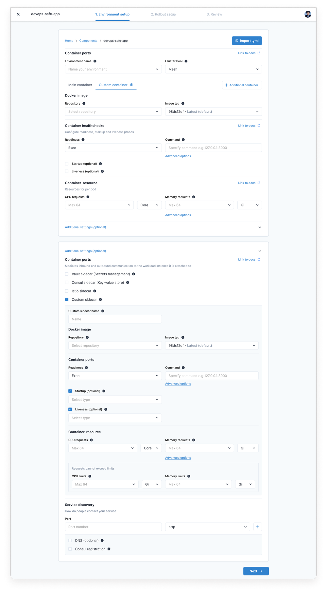
1. Environment config
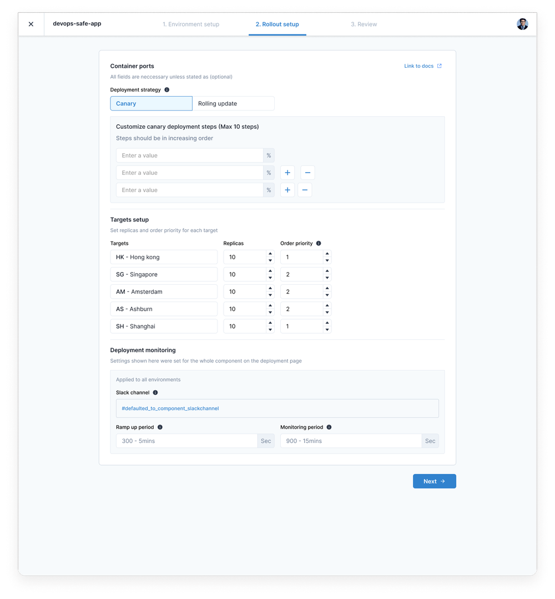
2. Rollout & DC selection
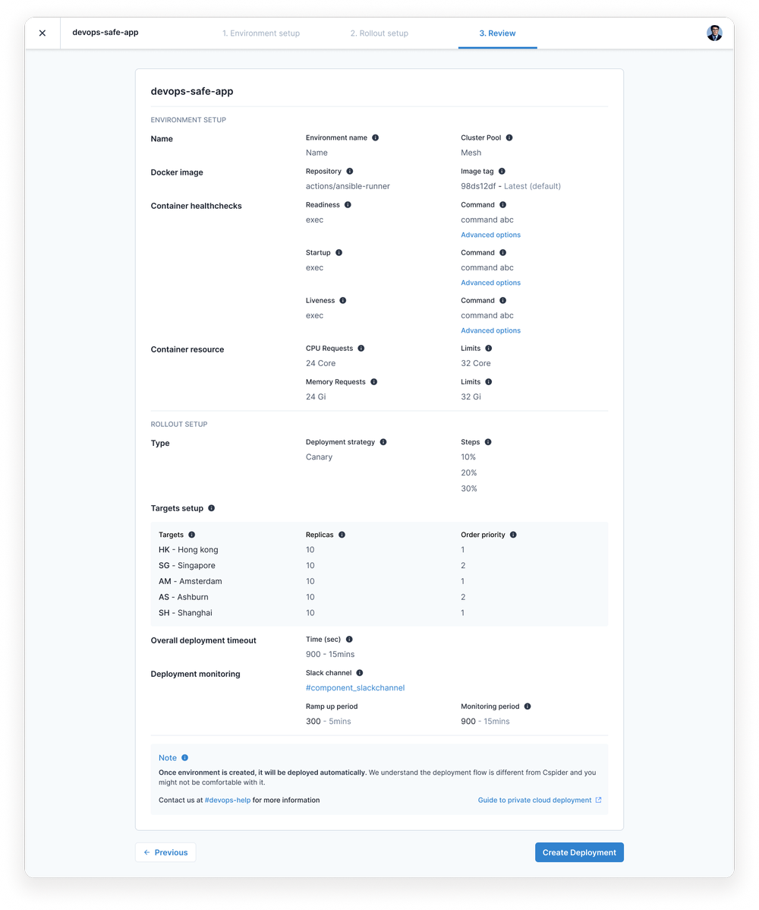
3. Review & deploy
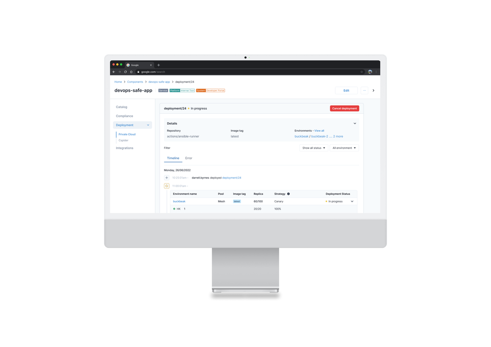
Results
Service creation collapsed from days to minutes.
Industry average SUS: 68. Was 1–2 days to create a service; on track for 70+.
Reflections
Credibility precedes craft
Learning Kubernetes and Docker wasn't optional — it was the price of entry to earn developer trust.
Metrics create permanence
The SUS baseline turned subjective opinions into trackable numbers that outlasted the project.
Phasing is everything
Quick wins built trust for bigger bets — sequencing made the difference between adoption and resistance.
What I'd do differently
Bring in a frontend engineer earlier. I spent too much of the first quarter on visual polish when the bigger UX wins were in workflow simplification.